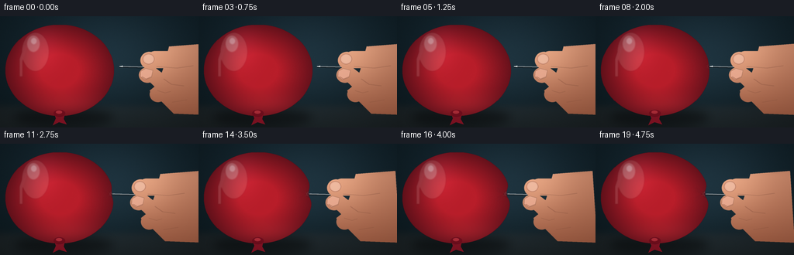
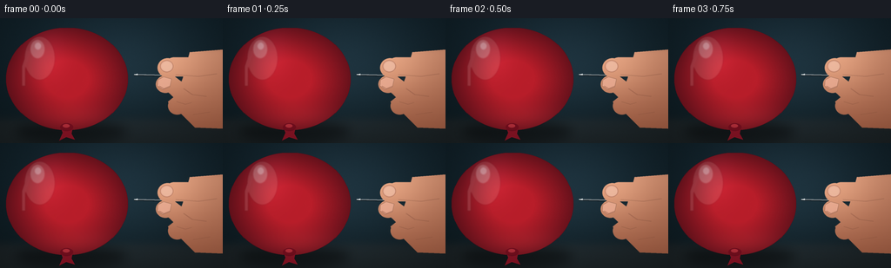
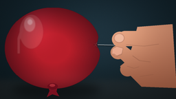

CODING AGENTS AS PIXEL WORLD MODELS
traex/GPT-5.6-Sol · phygen_021
点击播放 · 原生 RGB 像素
逐轮保存的候选
回放视频、检查图与代码变化。
每份候选均可单独播放。实际图片检查记录在下方工具轨迹中。
候选 01播放与检查图
点击播放 · 原生 RGB 像素


展开代码变化
--- 上一保存版本
+++ 本次保存版本
@@ -0,0 +1,221 @@
+from pathlib import Path
+import math
+import numpy as np
+from PIL import Image, ImageDraw, ImageFilter
+import artifact_io
+
+# Procedural, softly photographic close-up of a hand pushing a needle into a taut balloon.
+W, H, N, SS = 256, 144, 20, 4
+SW, SH = W * SS, H * SS
+rng = np.random.default_rng(21021)
+
+def smoothstep(x):
+ x = np.clip(x, 0.0, 1.0)
+ return x*x*(3.0-2.0*x)
+
+def scpts(points):
+ return [(int(x*SS), int(y*SS)) for x,y in points]
+
+def ellipse(draw, box, fill, outline=None, width=1):
+ draw.ellipse(tuple(int(v*SS) for v in box), fill=fill, outline=outline, width=max(1,int(width*SS)))
+
+def line(draw, points, fill, width):
+ draw.line(scpts(points), fill=fill, width=max(1,int(width*SS)), joint='curve')
+
+def make_background():
+ yy, xx = np.mgrid[0:SH,0:SW]
+ # Dark studio wall, warm pool of light around the action.
+ radial = np.exp(-(((xx/SS-138)/127)**2 + ((yy/SS-55)/88)**2)*1.6)
+ top = np.clip(1-yy/SH, 0, 1)
+ arr = np.zeros((SH,SW,3), np.float32)
+ arr[...,0] = 12 + 17*radial + 3*top
+ arr[...,1] = 24 + 25*radial + 5*top
+ arr[...,2] = 29 + 30*radial + 7*top
+ # tabletop below a soft horizon
+ table = 1/(1+np.exp(-(yy/SS-116)/2.8))
+ arr[...,0] += table*13; arr[...,1] += table*7; arr[...,2] += table*4
+ noise = rng.normal(0, .75, (SH,SW,1))
+ arr += noise
+ im = Image.fromarray(np.uint8(np.clip(arr,0,255)), 'RGB')
+ # understated defocused bokeh
+ b = Image.new('RGBA',(SW,SH),(0,0,0,0)); d=ImageDraw.Draw(b)
+ ellipse(d,(210,12,232,34),(105,142,139,10))
+ ellipse(d,(164,19,174,29),(160,181,167,9))
+ ellipse(d,(232,76,263,107),(159,112,90,8))
+ b=b.filter(ImageFilter.GaussianBlur(10*SS))
+ return Image.alpha_composite(im.convert('RGBA'),b)
+
+BACKGROUND = make_background()
+
+def balloon_mask(indentation, cy_contact=65):
+ # Construct a closed, analytic ellipse, changing only its right side to make a latex dimple.
+ cx, cy, rx, ry = 77.0, 70.0, 70.0, 59.0
+ ys = np.linspace(cy-ry,cy+ry,240)
+ left=[]; right=[]
+ for y in ys:
+ q=max(0.0,1.0-((y-cy)/ry)**2)
+ root=rx*math.sqrt(q)
+ left.append((cx-root,y))
+ pinch = indentation*math.exp(-0.5*((y-cy_contact)/6.2)**2)
+ # broad faint strain around the central dimple
+ pinch += 0.14*indentation*math.exp(-0.5*((y-cy_contact)/17.0)**2)
+ right.append((cx+root-pinch,y))
+ poly=left+right[::-1]
+ m=Image.new('L',(SW,SH),0); ImageDraw.Draw(m).polygon(scpts(poly),fill=255)
+ return m, poly
+
+def render_balloon(indentation, press):
+ mask, poly = balloon_mask(indentation)
+ yy,xx=np.mgrid[0:SH,0:SW]; x=xx/SS; y=yy/SS
+ cx,cy=77,70
+ r=np.sqrt(((x-cx)/72)**2+((y-cy)/61)**2)
+ # Saturated red latex with edge-darkening and a warm lower reflected light.
+ edge=np.clip((r-.35)/.68,0,1)
+ upper=np.exp(-(((x-53)/25)**2+((y-39)/31)**2))
+ lower=np.exp(-(((x-91)/54)**2+((y-116)/16)**2))
+ arr=np.zeros((SH,SW,4),np.uint8)
+ arr[...,0]=np.clip(185-88*edge+30*upper+24*lower,0,255)
+ arr[...,1]=np.clip(30-13*edge+10*upper+8*lower,0,255)
+ arr[...,2]=np.clip(42-15*edge+15*upper+8*lower,0,255)
+ arr[...,3]=np.asarray(mask)
+ balloon=Image.fromarray(arr,'RGBA')
+ # Dimensional vignette, glossy reflection and contact strain.
+ details=Image.new('RGBA',(SW,SH),(0,0,0,0)); d=ImageDraw.Draw(details)
+ ellipse(d,(28,21,63,71),(255,239,225,31))
+ ellipse(d,(35,25,51,46),(255,255,249,78))
+ ellipse(d,(40,28,47,36),(255,255,255,128))
+ # long soft window-light reflection
+ line(d,[(33,38),(27,56),(27,78)],(255,227,220,37),4.3)
+ # indentation has a dark trough and a tight bright rim at contact
+ if press>0.02:
+ nominal=77+70*math.sqrt(max(0,1-((65-70)/59)**2))
+ bx=nominal-indentation*1.14
+ ellipse(d,(bx-2.7,61.5,bx+3.1,68.5),(69,7,20,int(55+80*press)))
+ # radiating latex stress creases
+ for off,alpha in [(-8,55),(-4,72),(5,63),(9,42)]:
+ line(d,[(bx-1,65),(bx-9-3*press,65+off)],(255,154,157,int(alpha*press)),.55)
+ line(d,[(bx-1,62),(bx+1,64.4)],(255,210,205,int(120*press)),.75)
+ line(d,[(bx-1,68),(bx+1,65.7)],(255,164,171,int(85*press)),.55)
+ details=details.filter(ImageFilter.GaussianBlur(.65*SS))
+ details.putalpha(Image.composite(details.getchannel('A'),Image.new('L',(SW,SH),0),mask))
+ balloon=Image.alpha_composite(balloon,details)
+ # crisp but softly lit contour
+ outline=Image.new('RGBA',(SW,SH),(0,0,0,0)); od=ImageDraw.Draw(outline)
+ od.line(scpts(poly+[poly[0]]),fill=(88,12,25,115),width=max(1,int(.75*SS)),joint='curve')
+ balloon=Image.alpha_composite(balloon,outline)
+ return balloon, mask
+
+def draw_balloon_neck(base):
+ # Tied neck at the bottom anchors this as a fully inflated balloon.
+ layer=Image.new('RGBA',(SW,SH),(0,0,0,0)); d=ImageDraw.Draw(layer)
+ d.polygon(scpts([(69,124),(84,124),(82,133),(86,140),(76,137),(68,141),(72,132)]), fill=(129,19,35,255))
+ line(d,[(69,125),(83,125)],(245,95,104,105),1.2)
+ ellipse(d,(69,121,84,130),(112,13,29,235))
+ ellipse(d,(72,122,80,126),(235,75,88,100))
+ return Image.alpha_composite(base,layer)
+
+def hand_layer(dx):
+ # A pinching right hand: index finger above, thumb below, palm continuing off frame.
+ m=Image.new('L',(SW,SH),0); md=ImageDraw.Draw(m)
+ # palm and wrist
+ md.polygon(scpts([(218+dx,39),(269+dx,35),(275+dx,128),(224+dx,126),(207+dx,109),(202+dx,91),(210+dx,69)]),fill=255)
+ # index finger, extended horizontally, with rounded fingertip
+ md.rounded_rectangle((int((189+dx)*SS),int(45*SS),int((269+dx)*SS),int(67*SS)),radius=int(11*SS),fill=255)
+ ellipse(md,(181+dx,46,204+dx,68),255)
+ # thumb diagonally pinching upward, broad curved polygon plus fingertip
+ md.polygon(scpts([(239+dx,104),(214+dx,105),(192+dx,84),(184+dx,80),(185+dx,68),(198+dx,65),(215+dx,78),(244+dx,84)]),fill=255)
+ ellipse(md,(179+dx,66,201+dx,86),255)
+ # curled middle finger beneath
+ md.polygon(scpts([(220+dx,87),(203+dx,88),(193+dx,96),(197+dx,108),(219+dx,112),(238+dx,103)]),fill=255)
+ ellipse(md,(193+dx,91,214+dx,111),255)
+ # slight feathering, while preserving silhouette
+ mask=m.filter(ImageFilter.GaussianBlur(.22*SS))
+ yy,xx=np.mgrid[0:SH,0:SW]; x=xx/SS-dx; y=yy/SS
+ key=np.exp(-(((x-190)/47)**2+((y-48)/45)**2))
+ shade=np.clip((y-43)/93,0,1)
+ arr=np.zeros((SH,SW,4),np.uint8)
+ arr[...,0]=np.clip(202+35*key-48*shade,0,255)
+ arr[...,1]=np.clip(135+35*key-47*shade,0,255)
+ arr[...,2]=np.clip(105+30*key-42*shade,0,255)
+ arr[...,3]=np.asarray(mask)
+ hand=Image.fromarray(arr,'RGBA')
+ det=Image.new('RGBA',(SW,SH),(0,0,0,0)); d=ImageDraw.Draw(det)
+ # index nail and cuticle
+ ellipse(d,(184+dx,48.7,199+dx,62.2),(238,181,158,215),(139,75,62,80),.5)
+ ellipse(d,(186+dx,50,197.5+dx,60.6),(249,203,181,155))
+ line(d,[(202+dx,65),(228+dx,67),(249+dx,64)],(108,54,44,68),.75)
+ # thumb nail, angled impression
+ d.polygon(scpts([(181.5+dx,71),(188+dx,67.5),(197+dx,70),(195+dx,79),(187+dx,82),(181+dx,78)]),fill=(239,176,151,205))
+ line(d,[(183+dx,78),(188+dx,81),(195+dx,78)],(128,67,54,80),.5)
+ # folds/creases sell the grip
+ line(d,[(211+dx,81),(221+dx,88),(237+dx,90)],(109,52,42,62),.8)
+ line(d,[(203+dx,96),(213+dx,99),(220+dx,97)],(103,48,42,75),.7)
+ line(d,[(222+dx,111),(241+dx,108)],(103,49,42,55),.7)
+ det=det.filter(ImageFilter.GaussianBlur(.25*SS))
+ det.putalpha(Image.composite(det.getchannel('A'),Image.new('L',(SW,SH),0),m))
+ return Image.alpha_composite(hand,det)
+
+def needle_layer(tipx, gripx, boundary, penetration):
+ layer=Image.new('RGBA',(SW,SH),(0,0,0,0)); d=ImageDraw.Draw(layer)
+ # Needle rises very slightly toward the hand.
+ def ny(x): return 65.0 + 0.025*(x-tipx)
+ outside_start=max(tipx,boundary-.2)
+ # cast hairline shadow
+ line(d,[(outside_start,ny(outside_start)+1.15),(gripx,ny(gripx)+1.15)],(0,0,0,100),1.35)
+ line(d,[(outside_start,ny(outside_start)),(gripx+4,ny(gripx+4))],(108,115,119,255),1.3)
+ line(d,[(outside_start,ny(outside_start)-.35),(gripx+4,ny(gripx+4)-.35)],(243,249,250,245),.45)
+ # Sharp bevel/tip, while still outside. It shortens visibly as latex envelops it.
+ if penetration < .35:
+ d.polygon(scpts([(tipx,ny(tipx)),(tipx+4.2,ny(tipx)-1.05),(tipx+4.2,ny(tipx)+.9)]),fill=(224,230,231,255))
+ # short dark line of the point visible through stretched, translucent red latex
+ if penetration>0:
+ alpha=int(min(115,35+penetration*14))
+ line(d,[(tipx,ny(tipx)),(boundary,ny(boundary))],(63,18,24,alpha),.78)
+ return layer
+
+def make_frame(i):
+ p=smoothstep(i/(N-1))
+ tipx=154.0-18.2*p
+ dx=-18.2*p
+ gripx=197.0+dx
+ press=smoothstep((p-.24)/.76)
+ indentation=5.0*press
+ nominal=77+70*math.sqrt(1-((65-70)/59)**2)
+ boundary=nominal-indentation*1.14
+ penetration=max(0.0,boundary-tipx)
+
+ base=BACKGROUND.copy()
+ # soft balloon shadow on tabletop
+ sh=Image.new('RGBA',(SW,SH),(0,0,0,0)); sd=ImageDraw.Draw(sh)
+ ellipse(sd,(18,119,146,143),(0,0,0,105))
+ sh=sh.filter(ImageFilter.GaussianBlur(6*SS)); base=Image.alpha_composite(base,sh)
+
+ bal,mask=render_balloon(indentation,press)
+ base=Image.alpha_composite(base,bal)
+ base=draw_balloon_neck(base)
+
+ # Needle is above the balloon only outside the puncture; point becomes buried.
+ base=Image.alpha_composite(base,needle_layer(tipx,gripx,boundary,penetration))
+ base=Image.alpha_composite(base,hand_layer(dx))
+
+ # Contact aperture sits on top of needle and becomes evident late in the push.
+ if press>.08:
+ top=Image.new('RGBA',(SW,SH),(0,0,0,0)); td=ImageDraw.Draw(top)
+ a=int(80+90*press)
+ ellipse(td,(boundary-1.05,63.85,boundary+1.1,66.2),(48,5,15,a))
+ line(td,[(boundary-.2,64.1),(boundary-.2,65.9)],(255,147,151,int(65*press)),.36)
+ base=Image.alpha_composite(base,top)
+
+ # Gentle depth vignette.
+ yy,xx=np.mgrid[0:SH,0:SW]
+ vign=np.clip((((xx/SS-W/2)/(W*.72))**2+((yy/SS-H/2)/(H*.83))**2),0,1)
+ arr=np.array(base.convert('RGB')).astype(np.float32)
+ arr*= (1-.17*vign[...,None])
+ # stable fine sensor grain
+ grain=np.random.default_rng(4000+i).normal(0,.42,arr.shape[:2])[...,None]
+ arr=np.clip(arr+grain,0,255).astype(np.uint8)
+ im=Image.fromarray(arr,'RGB').resize((W,H),Image.Resampling.LANCZOS)
+ return np.asarray(im,dtype=np.uint8)
+
+frames=np.stack([make_frame(i) for i in range(N)],axis=0)
+artifact_io.save(frames,Path(__file__).resolve().parent)
可观测工具轨迹
实际执行的命令与返回图片。
命令 1exit 0
/bin/bash -lc "cat prompt.txt && printf '\\n---RULES---\\n' && cat GENERATION_RULES.md && printf '\\n---SPEC---\\n' && cat task_spec.json"
命令 2exit 0
/bin/bash -lc "find . -maxdepth 2 -type f -printf '%p\\n' | sort | head -200"
命令 3exit 0
/bin/bash -lc 'cat artifact_io.py'
命令 4exit 0
/bin/bash -lc "cat > generate.py <<'PY'
from pathlib import Path
import math
import numpy as np
from PIL import Image, ImageDraw, ImageFilter
import artifact_io
# Procedural, softly photographic close-up of a hand pushing a needle into a taut balloon.
W, H, N, SS = 256, 144, 20, 4
SW, SH = W * SS, H * SS
rng = np.random.default_rng(21021)
def smoothstep(x):
x = np.clip(x, 0.0, 1.0)
return x*x*(3.0-2.0*x)
def scpts(points):
return [(int(x*SS), int(y*SS)) for x,y in points]
def ellipse(draw, box, fill, outline=None, width=1):
draw.ellipse(tuple(int(v*SS) for v in box), fill=fill, outline=outline, width=max(1,int(width*SS)))
def line(draw, points, fill, width):
draw.line(scpts(points), fill=fill, width=max(1,int(width*SS)), joint='curve')
def make_background():
yy, xx = np.mgrid[0:SH,0:SW]
# Dark studio wall, warm pool of light around the action.
radial = np.exp(-(((xx/SS-138)/127)**2 + ((yy/SS-55)/88)**2)*1.6)
top = np.clip(1-yy/SH, 0, 1)
arr = np.zeros((SH,SW,3), np.float32)
arr[...,0] = 12 + 17*radial + 3*top
arr[...,1] = 24 + 25*radial + 5*top
arr[...,2] = 29 + 30*radial + 7*top
# tabletop below a soft horizon
table = 1/(1+np.exp(-(yy/SS-116)/2.8))
arr[...,0] += table*13; arr[...,1] += table*7; arr[...,2] += table*4
noise = rng.normal(0, .75, (SH,SW,1))
arr += noise
im = Image.fromarray(np.uint8(np.clip(arr,0,255)), 'RGB')
# understated defocused bokeh
b = Image.new('RGBA',(SW,SH),(0,0,0,0)); d=ImageDraw.Draw(b)
ellipse(d,(210,12,232,34),(105,142,139,10))
ellipse(d,(164,19,174,29),(160,181,167,9))
ellipse(d,(232,76,263,107),(159,112,90,8))
b=b.filter(ImageFilter.GaussianBlur(10*SS))
return Image.alpha_composite(im.convert('RGBA'),b)
BACKGROUND = make_background()
def balloon_mask(indentation, cy_contact=65):
# Construct a closed, analytic ellipse, changing only its right side to make a latex dimple.
cx, cy, rx, ry = 77.0, 70.0, 70.0, 59.0
ys = np.linspace(cy-ry,cy+ry,240)
left=[]; right=[]
for y in ys:
q=max(0.0,1.0-((y-cy)/ry)**2)
root=rx*math.sqrt(q)
left.append((cx-root,y))
pinch = indentation*math.exp(-0.5*((y-cy_contact)/6.2)**2)
# broad faint strain around the central dimple
pinch += 0.14*indentation*math.exp(-0.5*((y-cy_contact)/17.0)**2)
right.append((cx+root-pinch,y))
poly=left+right[::-1]
m=Image.new('L',(SW,SH),0); ImageDraw.Draw(m).polygon(scpts(poly),fill=255)
return m, poly
def render_balloon(indentation, press):
mask, poly = balloon_mask(indentation)
yy,xx=np.mgrid[0:SH,0:SW]; x=xx/SS; y=yy/SS
cx,cy=77,70
r=np.sqrt(((x-cx)/72)**2+((y-cy)/61)**2)
# Saturated red latex with edge-darkening and a warm lower reflected light.
edge=np.clip((r-.35)/.68,0,1)
upper=np.exp(-(((x-53)/25)**2+((y-39)/31)**2))
lower=np.exp(-(((x-91)/54)**2+((y-116)/16)**2))
arr=np.zeros((SH,SW,4),np.uint8)
arr[...,0]=np.clip(185-88*edge+30*upper+24*lower,0,255)
arr[...,1]=np.clip(30-13*edge+10*upper+8*lower,0,255)
arr[...,2]=np.clip(42-15*edge+15*upper+8*lower,0,255)
arr[...,3]=np.asarray(mask)
balloon=Image.fromarray(arr,'RGBA')
# Dimensional vignette, glossy reflection and contact strain.
details=Image.new('RGBA',(SW,SH),(0,0,0,0)); d=ImageDraw.Draw(details)
ellipse(d,(28,21,63,71),(255,239,225,31))
ellipse(d,(35,25,51,46),(255,255,249,78))
ellipse(d,(40,28,47,36),(255,255,255,128))
# long soft window-light reflection
line(d,[(33,38),(27,56),(27,78)],(255,227,220,37),4.3)
# indentation has a dark trough and a tight bright rim at contact
if press>0.02:
nominal=77+70*math.sqrt(max(0,1-((65-70)/59)**2))
bx=nominal-indentation*1.14
ellipse(d,(bx-2.7,61.5,bx+3.1,68.5),(69,7,20,int(55+80*press)))
# radiating latex stress creases
for off,alpha in [(-8,55),(-4,72),(5,63),(9,42)]:
line(d,[(bx-1,65),(bx-9-3*press,65+off)],(255,154,157,int(alpha*press)),.55)
line(d,[(bx-1,62),(bx+1,64.4)],(255,210,205,int(120*press)),.75)
line(d,[(bx-1,68),(bx+1,65.7)],(255,164,171,int(85*press)),.55)
details=details.filter(ImageFilter.GaussianBlur(.65*SS))
details.putalpha(Image.composite(details.getchannel('A'),Image.new('L',(SW,SH),0),mask))
balloon=Image.alpha_composite(balloon,details)
# crisp but softly lit contour
outline=Image.new('RGBA',(SW,SH),(0,0,0,0)); od=ImageDraw.Draw(outline)
od.line(scpts(poly+[poly[0]]),fill=(88,12,25,115),width=max(1,int(.75*SS)),joint='curve')
balloon=Image.alpha_composite(balloon,outline)
return balloon, mask
def draw_balloon_neck(base):
# Tied neck at the bottom anchors this as a fully inflated balloon.
layer=Image.new('RGBA',(SW,SH),(0,0,0,0)); d=ImageDraw.Draw(layer)
d.polygon(scpts([(69,124),(84,124),(82,133),(86,140),(76,137),(68,141),(72,132)]), fill=(129,19,35,255))
line(d,[(69,125),(83,125)],(245,95,104,105),1.2)
ellipse(d,(69,121,84,130),(112,13,29,235))
ellipse(d,(72,122,80,126),(235,75,88,100))
return Image.alpha_composite(base,layer)
def hand_layer(dx):
# A pinching right hand: index finger above, thumb below, palm continuing off frame.
m=Image.new('L',(SW,SH),0); md=ImageDraw.Draw(m)
# palm and wrist
md.polygon(scpts([(218+dx,39),(269+dx,35),(275+dx,128),(224+dx,126),(207+dx,109),(202+dx,91),(210+dx,69)]),fill=255)
# index finger, extended horizontally, with rounded fingertip
md.rounded_rectangle((int((189+dx)*SS),int(45*SS),int((269+dx)*SS),int(67*SS)),radius=int(11*SS),fill=255)
ellipse(md,(181+dx,46,204+dx,68),255)
# thumb diagonally pinching upward, broad curved polygon plus fingertip
md.polygon(scpts([(239+dx,104),(214+dx,105),(192+dx,84),(184+dx,80),(185+dx,68),(198+dx,65),(215+dx,78),(244+dx,84)]),fill=255)
ellipse(md,(179+dx,66,201+dx,86),255)
# curled middle finger beneath
md.polygon(scpts([(220+dx,87),(203+dx,88),(193+dx,96),(197+dx,108),(219+dx,112),(238+dx,103)]),fill=255)
ellipse(md,(193+dx,91,214+dx,111),255)
# slight feathering, while preserving silhouette
mask=m.filter(ImageFilter.GaussianBlur(.22*SS))
yy,xx=np.mgrid[0:SH,0:SW]; x=xx/SS-dx; y=yy/SS
key=np.exp(-(((x-190)/47)**2+((y-48)/45)**2))
shade=np.clip((y-43)/93,0,1)
arr=np.zeros((SH,SW,4),np.uint8)
arr[...,0]=np.clip(202+35*key-48*shade,0,255)
arr[...,1]=np.clip(135+35*key-47*shade,0,255)
arr[...,2]=np.clip(105+30*key-42*shade,0,255)
arr[...,3]=np.asarray(mask)
hand=Image.fromarray(arr,'RGBA')
det=Image.new('RGBA',(SW,SH),(0,0,0,0)); d=ImageDraw.Draw(det)
# index nail and cuticle
ellipse(d,(184+dx,48.7,199+dx,62.2),(238,181,158,215),(139,75,62,80),.5)
ellipse(d,(186+dx,50,197.5+dx,60.6),(249,203,181,155))
line(d,[(202+dx,65),(228+dx,67),(249+dx,64)],(108,54,44,68),.75)
# thumb nail, angled impression
d.polygon(scpts([(181.5+dx,71),(188+dx,67.5),(197+dx,70),(195+dx,79),(187+dx,82),(181+dx,78)]),fill=(239,176,151,205))
line(d,[(183+dx,78),(188+dx,81),(195+dx,78)],(128,67,54,80),.5)
# folds/creases sell the grip
line(d,[(211+dx,81),(221+dx,88),(237+dx,90)],(109,52,42,62),.8)
line(d,[(203+dx,96),(213+dx,99),(220+dx,97)],(103,48,42,75),.7)
line(d,[(222+dx,111),(241+dx,108)],(103,49,42,55),.7)
det=det.filter(ImageFilter.GaussianBlur(.25*SS))
det.putalpha(Image.composite(det.getchannel('A'),Image.new('L',(SW,SH),0),m))
return Image.alpha_composite(hand,det)
def needle_layer(tipx, gripx, boundary, penetration):
layer=Image.new('RGBA',(SW,SH),(0,0,0,0)); d=ImageDraw.Draw(layer)
# Needle rises very slightly toward the hand.
def ny(x): return 65.0 + 0.025*(x-tipx)
outside_start=max(tipx,boundary-.2)
# cast hairline shadow
line(d,[(outside_start,ny(outside_start)+1.15),(gripx,ny(gripx)+1.15)],(0,0,0,100),1.35)
line(d,[(outside_start,ny(outside_start)),(gripx+4,ny(gripx+4))],(108,115,119,255),1.3)
line(d,[(outside_start,ny(outside_start)-.35),(gripx+4,ny(gripx+4)-.35)],(243,249,250,245),.45)
# Sharp bevel/tip, while still outside. It shortens visibly as latex envelops it.
if penetration < .35:
d.polygon(scpts([(tipx,ny(tipx)),(tipx+4.2,ny(tipx)-1.05),(tipx+4.2,ny(tipx)+.9)]),fill=(224,230,231,255))
# short dark line of the point visible through stretched, translucent red latex
if penetration>0:
alpha=int(min(115,35+penetration*14))
line(d,[(tipx,ny(tipx)),(boundary,ny(boundary))],(63,18,24,alpha),.78)
return layer
def make_frame(i):
p=smoothstep(i/(N-1))
tipx=154.0-18.2*p
dx=-18.2*p
gripx=197.0+dx
press=smoothstep((p-.24)/.76)
indentation=5.0*press
nominal=77+70*math.sqrt(1-((65-70)/59)**2)
boundary=nominal-indentation*1.14
penetration=max(0.0,boundary-tipx)
base=BACKGROUND.copy()
# soft balloon shadow on tabletop
sh=Image.new('RGBA',(SW,SH),(0,0,0,0)); sd=ImageDraw.Draw(sh)
ellipse(sd,(18,119,146,143),(0,0,0,105))
sh=sh.filter(ImageFilter.GaussianBlur(6*SS)); base=Image.alpha_composite(base,sh)
bal,mask=render_balloon(indentation,press)
base=Image.alpha_composite(base,bal)
base=draw_balloon_neck(base)
# Needle is above the balloon only outside the puncture; point becomes buried.
base=Image.alpha_composite(base,needle_layer(tipx,gripx,boundary,penetration))
base=Image.alpha_composite(base,hand_layer(dx))
# Contact aperture sits on top of needle and becomes evident late in the push.
if press>.08:
top=Image.new('RGBA',(SW,SH),(0,0,0,0)); td=ImageDraw.Draw(top)
a=int(80+90*press)
ellipse(td,(boundary-1.05,63.85,boundary+1.1,66.2),(48,5,15,a))
line(td,[(boundary-.2,64.1),(boundary-.2,65.9)],(255,147,151,int(65*press)),.36)
base=Image.alpha_composite(base,top)
# Gentle depth vignette.
yy,xx=np.mgrid[0:SH,0:SW]
vign=np.clip((((xx/SS-W/2)/(W*.72))**2+((yy/SS-H/2)/(H*.83))**2),0,1)
arr=np.array(base.convert('RGB')).astype(np.float32)
arr*= (1-.17*vign[...,None])
# stable fine sensor grain
grain=np.random.default_rng(4000+i).normal(0,.42,arr.shape[:2])[...,None]
arr=np.clip(arr+grain,0,255).astype(np.uint8)
im=Image.fromarray(arr,'RGB').resize((W,H),Image.Resampling.LANCZOS)
return np.asarray(im,dtype=np.uint8)
frames=np.stack([make_frame(i) for i in range(N)],axis=0)
artifact_io.save(frames,Path(__file__).resolve().parent)
PY
python generate.py
ls -lh pixels.npz inspection.png index.html frames/00.png frames/19.png"命令 5exit 0
/bin/bash -lc "python - <<'PY'
from PIL import Image
for i in [0,8,14,19]:
im=Image.open(f'frames/{i:02d}.png')
im.crop((120,48,205,83)).resize((680,280)).save(f'.tmp/crop{i}.png')
PY"视觉工具实际返回图片 1

视觉工具实际返回图片 2

视觉工具实际返回图片 3
视觉工具实际返回图片 4
保存候选 1 份；完成命令 5 次；可验证图片返回 4 张。原始 API 响应与完整日志保留在本地。